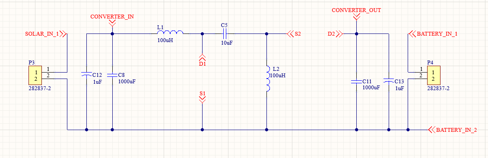

Projects
Bidirectional DC-DC Converter


Designed a high-efficiency SEPIC-Zeta converter using STM32 for renewable energy applications. Implemented control algorithms and developed a custom PCB for power conversion.
Digital Voltmeter

Developed an STM32-based voltmeter using ADC and OLED display. Designed a compact PCB for accurate voltage measurement.
Air Quality Monitoring System
Built a multi-sensor system to measure environmental parameters using STM32. Displayed real-time data on an OLED screen.
IoT Railway Crack Detection
Developed an IoT-based robotic system using ESP8266. Enabled real-time monitoring and data logging using cloud platforms.
Heart Pulse Monitoring System
Designed a health monitoring system for real-time pulse detection and alerts. Integrated sensors with microcontroller and mobile notification system.